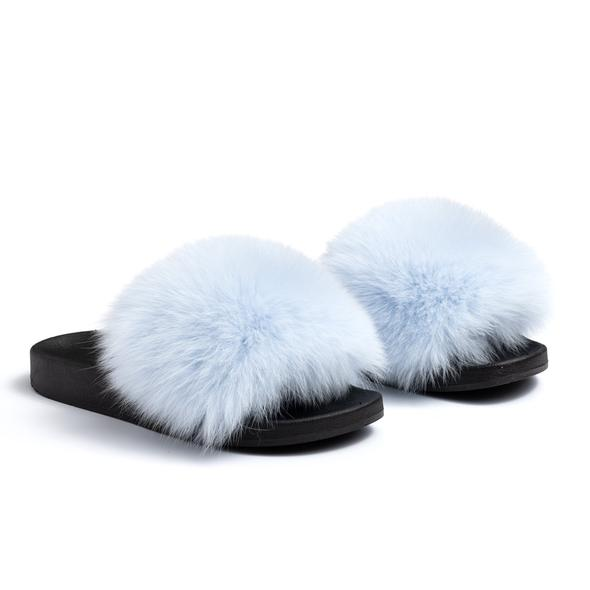

Fuzzy slippers are as good as they sound, combining slipper and sandal into a cozy statement shoe. They are often made of soft sheepskin with a lightweight platform to keep them airy, this standout slide pairs perfectly with midi dresses or jeans.
Featured Business: Confetti